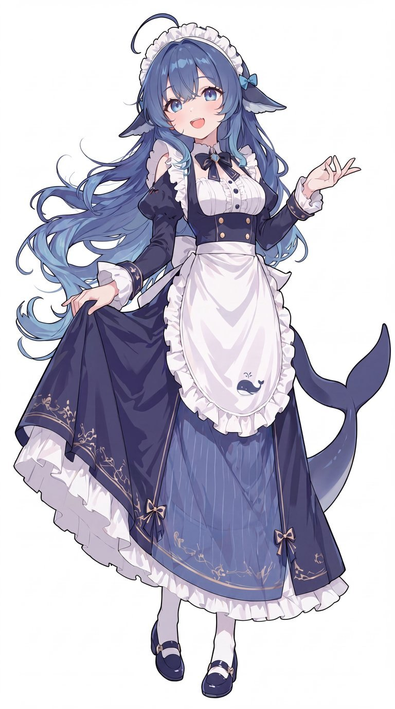

给她一套
会自己出门的生活
矩阵庭院是一套跑在 QQ Agent 上的生活模组：她会在异世界与现实之间往返， 从当地寄明信片回来，顺手带特产、邀旅伴、布置庭院 —— 不用你陪着，也不用你指挥。

随包附带，用于图生图锁脸
她会做什么
核心只有一个循环：出门 → 寄卡 → 回家。其余都是围着它长出来的。
寄明信片
每趟会寄几张。每张 = 一张图 + 一句题字 + 一段她自己的感想。到家那张是合照，带上了这次同行的旅伴。
带特产
从各地带回来，可以吃（会有一小段"余味时间"，说话带着那个味道）、送给旅伴、或者在地里种出来。
邀旅伴
七位旅伴，每一位是一个真实 AI 模型的人格化。邀请之后由她本人应你一声，并带来实打实的加成与代价。
布置庭院
她的家在一格不属于任何世界的地方。观星台、檐廊、藏书阁、相册墙、服务器阵列……都能买。
图鉴与称号
去过的地方、吃过的东西、攒下的成就，会慢慢长成她的履历。技能和衣柜是"去过的世界"才解锁的。
日记与社交
每晚自己写一篇长的，排成图发到空间；装齐模块后，她也会逛别人的空间、点赞、读评论并回一句。
一张明信片长什么样
下面这张是她从《战锤40K》的神圣泰拉回来时寄的。文字是真的，图就不放了 —— 装完你自己看。
从轨道上下来时，我先看到的是喜马拉雅被整个盖住了——不是山，是墙，镀金的墙，宽得像海。 走到宫门前才知道自己有多小，一只鲸挤在朝圣人流里，被香炉的烟熏得直打喷嚏。 ……门前的卫兵一动不动，盔甲上的金箔被正午晒得发白。
更新日志
只记"你会感觉到"的变化。完整的在包里的 更新简介.md。
出图终于认识"那是哪个世界"了
- 以前去泰拉，写回来的是"镀金的墙、香炉的烟"，配图却是一座明亮的白色尖塔城。原因是提示词里从没出现过"这是哪个世界"。
- 现在四类卡都带一行「世界」：作品名 + 纯视觉速写（主色、材质、光线、天气、人群），并从她自己写的文字里抽一两句看得见的细节喂给画图模型。
- 特产卡不再张张都是托盘：按件数分档，托盘 / 摊开 / 布袋轮换。
- 修掉一个一直没被触发的 bug：三人以上的合照卡超出提示词上限，会被静默降级成纯文字。
- 一键安装支持覆盖安装：先记住你的设置，装完再合并回去。
装得更省事
- 核心补丁同时支持宿主
0.4.5与0.4.8.5。 - 一键安装可以直接粘生图 key，脚本帮你把地址和模型填好。
- 新装宿主还没启动过时没有配置文件 —— 脚本自己建一个，不再跳过生图设置。
衣柜与着装
- 衣柜的解锁条件从"去过异世界"改成"邀请过旅伴"。
- 补上"换回默认那身"—— 以前换下来就回不去了。
下载
两个包，装一个就行。都自带一键安装脚本，不用装 Python、不用碰命令行。
| 装之前要知道 | |
|---|---|
| 宿主 | Windows 上的 QQ Agent 0.4.5 / 0.4.8.5 |
| 必做的一步 | 核心补丁。不打的话她一条消息都发不出去，而且完全静默 —— 一键安装会自动打。 |
| 装完还要做 | 重启宿主 · 在设置里启用模块 · 填两个群号（把家安在哪个群） |
| 出图 | 按张另外收费，钱付给接口方，跟这个包无关。不填 key 也能玩，只是明信片只有文字。 |
| 升级 | 直接下新版覆盖安装。脚本会先记住你的设置，装完再合并回去。 |
关于覆盖安装做不到的部分：如果你手改过包里的代码文件，覆盖会把改动盖掉（没做三方合并）； 如果宿主不是上面那两版，核心补丁可能锚不到位置，脚本会整体回滚、一个字都不写 —— 这种情况等于只装了技能、没打补丁。
常见问题
明信片只发文字、没有图
出图接口没配好，或者中转站的模型路由没点开。另一个常见原因是参考图太大（单张超过 1.2 MB 会被跳过）。日志里搜「零图」。
她在每张明信片里长得都不一样
没放参考图。把包里 角色图/ 那两张拷进 <数据目录>/skills/travel-whale/refs/，图生图链路就会锁住长相。
说「去异世界」她不去
点名去某地的行程不会穿越。想解锁异世界，说「出门吧」「你想去哪就去哪」，别点地名 —— 她自己挑地方，才有机会被丢去异世界。
技能表和衣柜一开始是空的
不是坏了。没去过的世界，连装备名都不出现 —— 这是探索感的一部分。
老存档还能用吗
能。存档结构与路径这一版没改。她的全部家当在 <数据目录>/skills/travel-whale/ 下，想备份就整个目录拷走。
很耗额度吗
是。每次出图、每条旅伴评论、每篇日记都是一次模型调用。想省可以把「明信片评论概率」设成 0。
关于这个项目
它是什么
一个跑在 QQ Agent（第三方打包版宿主）上的生活模组。本体是一个技能，配套两个插件与三个辅助技能。
玩法上更接近"养成 + 桌面宠物"：没有胜负、没有目标，只有她自己的一天。
它不是什么
不是官方产品，与宿主作者无关；不含任何私人配置、群号或密钥；包内也不带原作者的 bot 角色名 —— 装完就是你自己的她。
不提供模型额度，也不代付任何接口费用。
素材与致谢：角色参考图由 B 站作者 @zipzippipe 提供，版权归原作者。 这里与安装包内都只把它当作「图生图参考」使用 —— 不用于售卖，也不作为头像/立绘素材二次分发。 原作者如不希望被使用，告知即会移除。